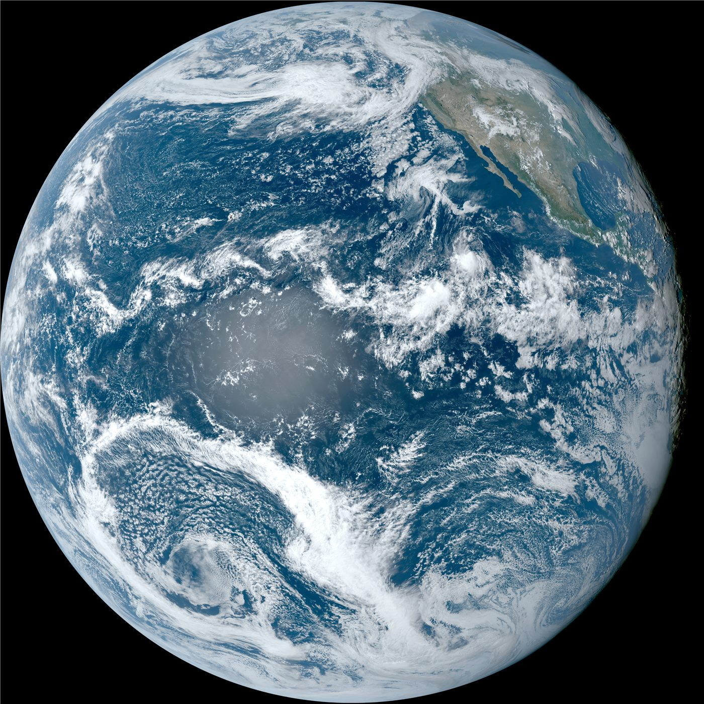

남중국해 '만경창파에 노을'… 자연 풍광 화보로 본 해양 일상
남중국해의 노을과 바다 풍경을 담은 화보가 공개됐다. 해양의 자연 풍광과 그 위에서 살아가는 사람들의 일상을 조명한다.
전금문 기자 · 2026.06.23
橋중국·문화

남중국해의 드넓은 바다와 노을을 담은 사진 기록이 공개됐다고 환구망이 23일 전했다. 만경창파 위로 번지는 저녁놀과 해양의 자연 풍광이 화보 형식으로 소개됐다.
광고 문의 · 300×250바다는 어업과 해운, 관광 등 다양한 산업의 무대이자 수많은 사람들의 생활 터전이다. 자연 풍광 너머에는 그곳에서 살아가는 이들의 일상이 자리한다.
해양 환경의 보전과 지속가능한 이용은 국제적 관심사다. 풍광을 기록하는 일은 자연의 가치를 환기하고 보전의 필요성을 일깨우는 의미가 있다.
이러한 화보는 특정 사안에 대한 주장이 아니라, 자연과 사람의 풍경을 담담히 전하는 기록물이다. 일상의 아름다움을 환기하는 콘텐츠로 받아들여진다.
華橋時報는 자연·문화 콘텐츠를 정치적 함의로 환원하지 않고, 풍경과 삶의 이야기를 있는 그대로 전한다.
출처·참고 (사실 확인용 — 본문은 직접 재작성)
· 環球網
· 環球網